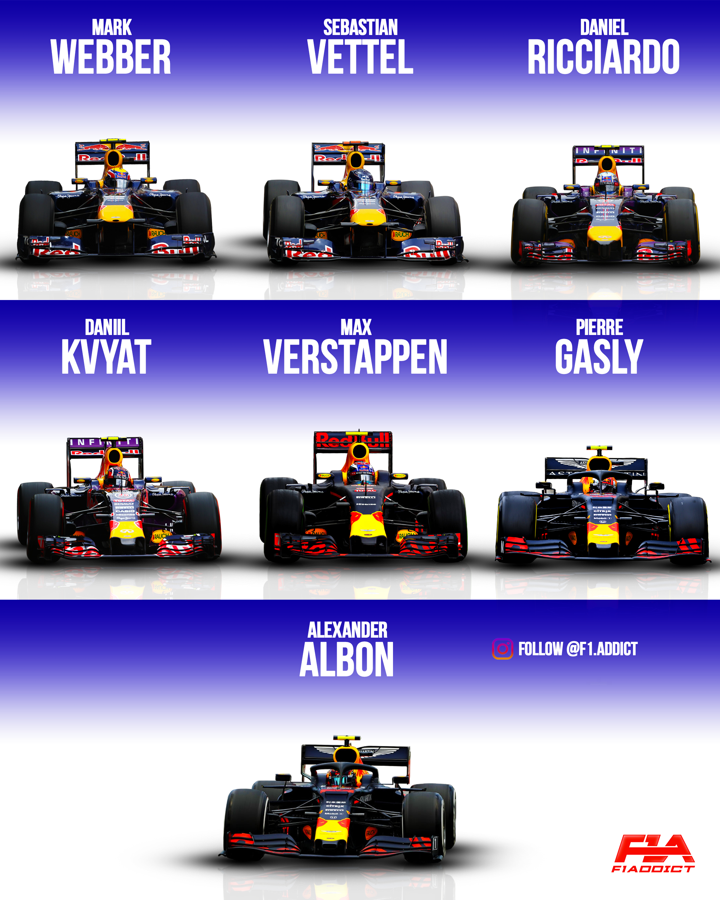
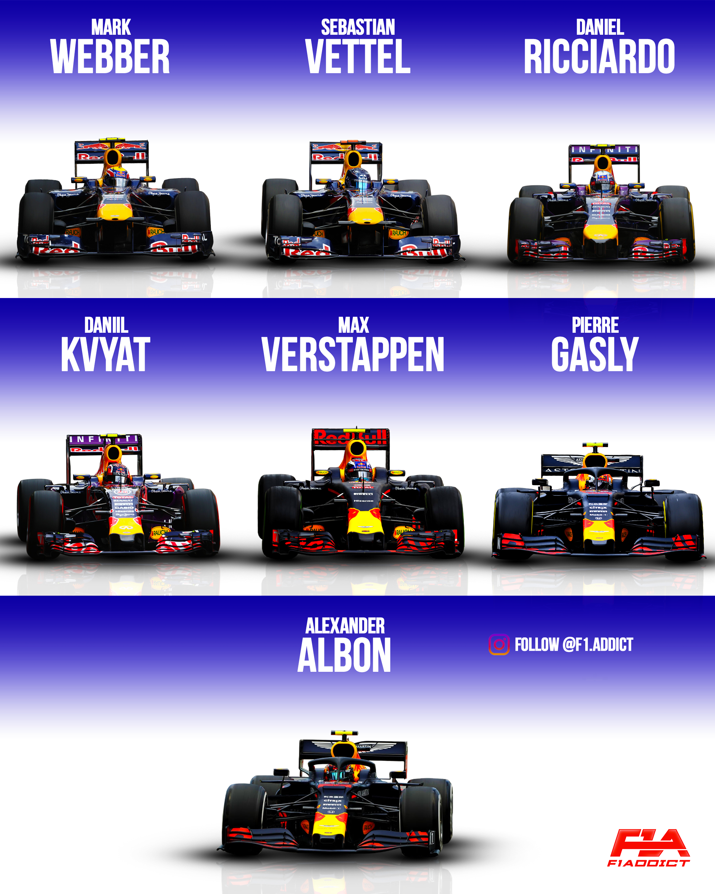

A Red Bull Racing csapatot 2005-ben alapította a Red Bull, miután megvásárolta a Jaguar F1 csapatot. Kezdetben középcsapat volt, de Adrian Newey főtervező érkezése technikai áttörést hozott.
A csapat 2010 és 2013 között zsinórban 4 egyéni és 4 konstruktőri világbajnoki címet nyert. Ekkor vált a Red Bull az F1 egyik domináns erejévé.
A hibrid korszak elején (Mercedes-dominancia) a Red Bull nem volt vb-esélyes. Fokozatos fejlődés, motorpartner-váltások (Renault → Honda).
2021-ben Max Verstappen megszerezte a csapat első vb-címét az új korszakban. A Red Bull azóta is meghatározó erő, technikailag és stratégiailag is.
 

| Mark Webber | Vettel csapattársa, futamgyőztes |
|---|---|
| Daniel Ricciardo | több futamgyőzelem, közönségkedvenc |
| Sergio Pérez(Checo) | kulcsszerep a konstruktőri sikerekben |
| David Coulthard | a csapat korai éveinek tapasztalt vezére |
| Carlos Sainz | rövid ideig a Red Bull kötelékében |
| Alexander Albon | Verstappen csapattársa volt |